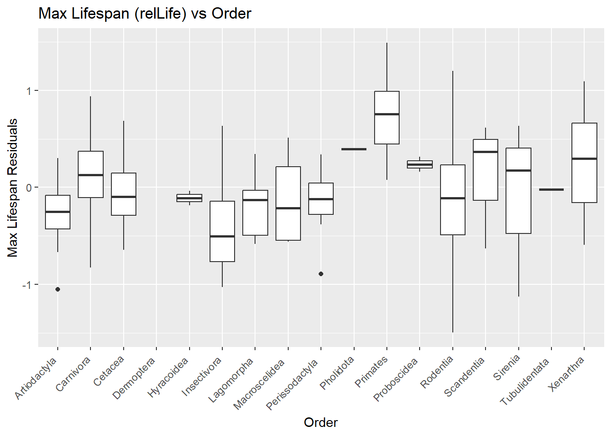
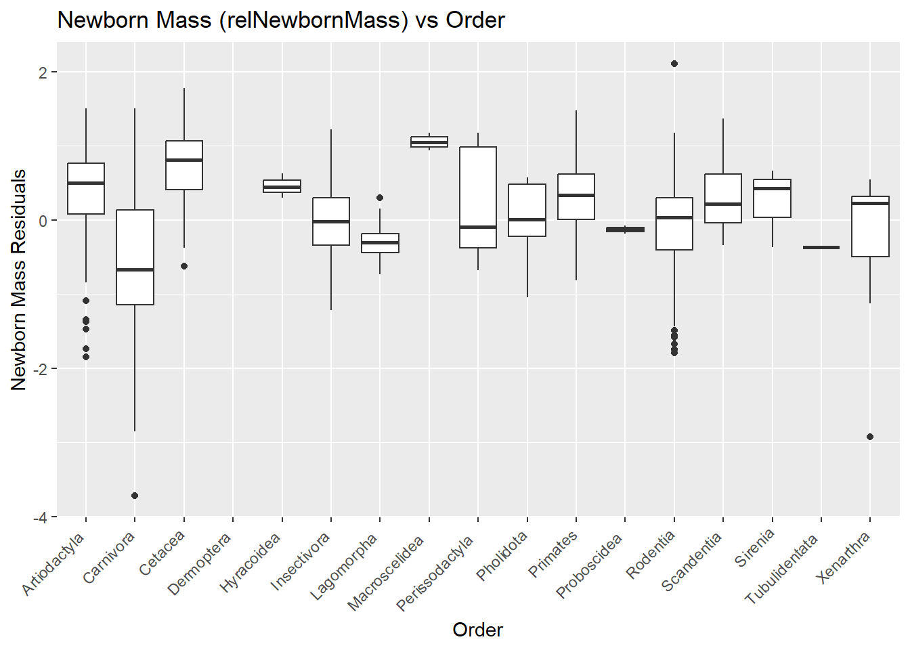
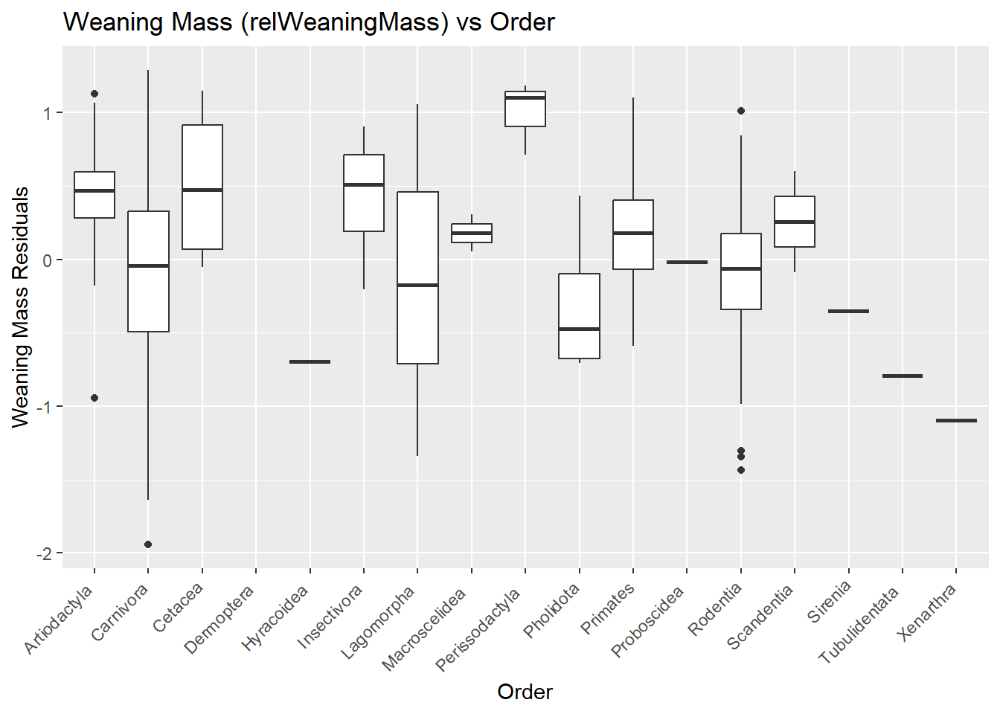
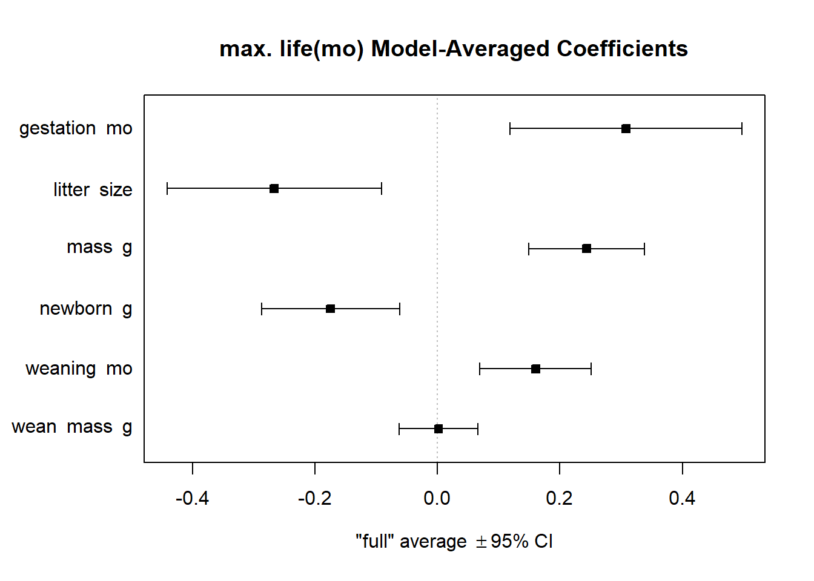
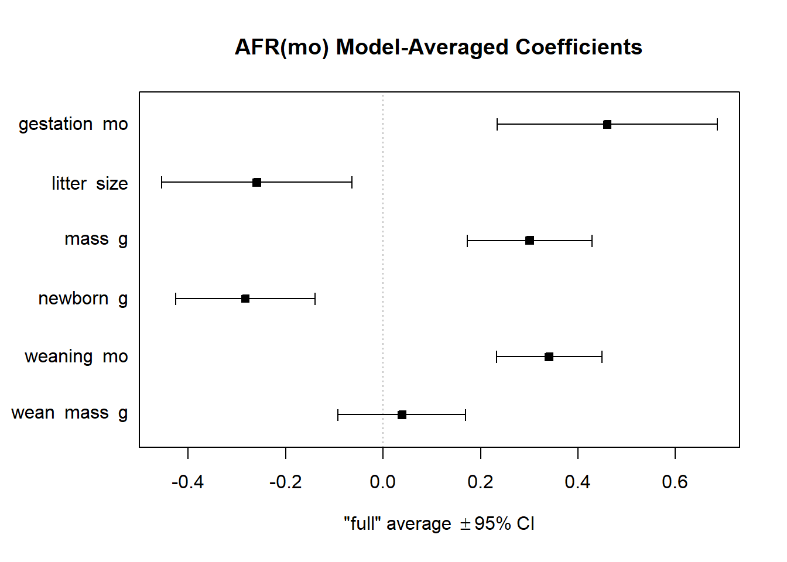

library(tidyverse)
library(skimr)
library(naniar)
library(MASS)
library(MuMIn)Exercise-11-Quarto
Exercise 11 - Practice Model Selection - Stephen Collins
Preliminaries
Loading the packages that I will be using for this assignment.
I used the read_tsv() function from the {tiddyverse} package to load the dataset.
f <- "https://raw.githubusercontent.com/difiore/ada-datasets/main/Mammal_lifehistories_v2.txt"
d <- read_tsv(f, col_names = TRUE)Rows: 1440 Columns: 14
── Column specification ────────────────────────────────────────────────────────
Delimiter: "\t"
chr (4): order, family, Genus, species
dbl (9): mass(g), gestation(mo), newborn(g), weaning(mo), wean mass(g), AFR(...
num (1): refs
ℹ Use `spec()` to retrieve the full column specification for this data.
ℹ Specify the column types or set `show_col_types = FALSE` to quiet this message.I did some exploratory data analysis for the mammal life story dataset. I used the skim() function from the {skimr} package and the glimpse() function. The following variables are categorical: order, family, Genus, and Species. The following variables are numerical: mass(g), gestation(mo), newborn(g), weaning(mo), wean mass(g), AFR(mo), max. life(mo), litter size, litters/year, and refs.
#summary stats
glimpse(d)Rows: 1,440
Columns: 14
$ order <chr> "Artiodactyla", "Artiodactyla", "Artiodactyla", "Artio…
$ family <chr> "Antilocapridae", "Bovidae", "Bovidae", "Bovidae", "Bo…
$ Genus <chr> "Antilocapra", "Addax", "Aepyceros", "Alcelaphus", "Am…
$ species <chr> "americana", "nasomaculatus", "melampus", "buselaphus"…
$ `mass(g)` <dbl> 45375.0, 182375.0, 41480.0, 150000.0, 28500.0, 55500.0…
$ `gestation(mo)` <dbl> 8.13, 9.39, 6.35, 7.90, 6.80, 5.08, 5.72, 5.50, 8.93, …
$ `newborn(g)` <dbl> 3246.36, 5480.00, 5093.00, 10166.67, -999.00, 3810.00,…
$ `weaning(mo)` <dbl> 3.00, 6.50, 5.63, 6.50, -999.00, 4.00, 4.04, 2.13, 10.…
$ `wean mass(g)` <dbl> 8900, -999, 15900, -999, -999, -999, -999, -999, 15750…
$ `AFR(mo)` <dbl> 13.53, 27.27, 16.66, 23.02, -999.00, 14.89, 10.23, 20.…
$ `max. life(mo)` <dbl> 142, 308, 213, 240, -999, 251, 228, 255, 300, 324, 300…
$ `litter size` <dbl> 1.85, 1.00, 1.00, 1.00, 1.00, 1.37, 1.00, 1.00, 1.00, …
$ `litters/year` <dbl> 1.00, 0.99, 0.95, -999.00, -999.00, 2.00, -999.00, 1.8…
$ refs <dbl> 1269232627, 12172326, 12892329, 121723, 12, 1291117232…skim(d)| Name | d |
| Number of rows | 1440 |
| Number of columns | 14 |
| _______________________ | |
| Column type frequency: | |
| character | 4 |
| numeric | 10 |
| ________________________ | |
| Group variables | None |
Variable type: character
| skim_variable | n_missing | complete_rate | min | max | empty | n_unique | whitespace |
|---|---|---|---|---|---|---|---|
| order | 0 | 1 | 7 | 14 | 0 | 17 | 0 |
| family | 0 | 1 | 6 | 15 | 0 | 96 | 0 |
| Genus | 0 | 1 | 3 | 16 | 0 | 618 | 0 |
| species | 0 | 1 | 3 | 17 | 0 | 1191 | 0 |
Variable type: numeric
| skim_variable | n_missing | complete_rate | mean | sd | p0 | p25 | p50 | p75 | p100 | hist |
|---|---|---|---|---|---|---|---|---|---|---|
| mass(g) | 0 | 1 | 3.835767e+05 | 5.055163e+06 | -999 | 50 | 403.02 | 7009.17 | 1.490000e+08 | ▇▁▁▁▁ |
| gestation(mo) | 0 | 1 | -2.872500e+02 | 4.553600e+02 | -999 | -999 | 1.05 | 4.50 | 2.146000e+01 | ▃▁▁▁▇ |
| newborn(g) | 0 | 1 | 6.703150e+03 | 9.091252e+04 | -999 | -999 | 2.65 | 98.00 | 2.250000e+06 | ▇▁▁▁▁ |
| weaning(mo) | 0 | 1 | -4.271700e+02 | 4.967100e+02 | -999 | -999 | 0.73 | 2.00 | 4.800000e+01 | ▆▁▁▁▇ |
| wean mass(g) | 0 | 1 | 1.604893e+04 | 5.036502e+05 | -999 | -999 | -999.00 | 10.00 | 1.907500e+07 | ▇▁▁▁▁ |
| AFR(mo) | 0 | 1 | -4.081200e+02 | 5.049700e+02 | -999 | -999 | 2.50 | 15.61 | 2.100000e+02 | ▆▁▁▁▇ |
| max. life(mo) | 0 | 1 | -4.902600e+02 | 6.153000e+02 | -999 | -999 | -999.00 | 147.25 | 1.368000e+03 | ▇▁▅▁▁ |
| litter size | 0 | 1 | -5.563000e+01 | 2.348800e+02 | -999 | 1 | 2.27 | 3.84 | 1.418000e+01 | ▁▁▁▁▇ |
| litters/year | 0 | 1 | -4.771400e+02 | 5.000300e+02 | -999 | -999 | 0.38 | 1.15 | 7.500000e+00 | ▇▁▁▁▇ |
| refs | 0 | 1 | 1.054762e+12 | 3.619709e+13 | 1 | 116 | 1229.00 | 1242249.75 | 1.368101e+15 | ▇▁▁▁▁ |
Challenge
STEP 1, 2, and 3
I was able to combine steps 1, 2, and 3 into one line of code. The pipe operator is the best!
I first used the rename() function to rename all the variables that had spaces or any special characters. It makes them easier to work with.
mass(g) = mass_g
gestation(mo) = gestation_mo
newborn(g) = newborn_g
weaning(mo) = weaning_mo
wean mass(g) = wean_mass_g
AFR(mo) = AFR_mo
max. life(mo) = max_life_mo
litter size = litter_size
litters/year = litters_year
I next replaced all the values of -999 with NA, using the replace_with_na_all() function from the {naniar} package. This function needs to be passed a condition that lets it apply to all the columns (~.x).
I then dropped the variables litters_year and refs using the select() function. I found that if you put a minus (-) in front of the variable name, then it removes it.
I finally log transformed all the remaining numerical data using mutate(across(where(is.numeric), log)). These variables should now look normally distributed, as they did not before.
d2 <- d |>
#renaming variables
rename(mass_g = "mass(g)",
gestation_mo = "gestation(mo)",
newborn_g = "newborn(g)",
weaning_mo = "weaning(mo)",
wean_mass_g = "wean mass(g)",
AFR_mo = "AFR(mo)",
max_life_mo = "max. life(mo)",
litter_size = "litter size",
litters_year = "litters/year") |>
#teh function replace_with_na_all() needs to havea a condition (~.x); this applies it to all columns
replace_with_na_all(condition = ~.x == -999) |>
#a minus (-) in front of the variables drops them
dplyr::select(-litters_year, -refs) |>
#log transformed anything in the data set that is numeric
mutate(across(where(is.numeric), log))
skim(d2)| Name | d2 |
| Number of rows | 1440 |
| Number of columns | 12 |
| _______________________ | |
| Column type frequency: | |
| character | 4 |
| numeric | 8 |
| ________________________ | |
| Group variables | None |
Variable type: character
| skim_variable | n_missing | complete_rate | min | max | empty | n_unique | whitespace |
|---|---|---|---|---|---|---|---|
| order | 0 | 1 | 7 | 14 | 0 | 17 | 0 |
| family | 0 | 1 | 6 | 15 | 0 | 96 | 0 |
| Genus | 0 | 1 | 3 | 16 | 0 | 618 | 0 |
| species | 0 | 1 | 3 | 17 | 0 | 1191 | 0 |
Variable type: numeric
| skim_variable | n_missing | complete_rate | mean | sd | p0 | p25 | p50 | p75 | p100 | hist |
|---|---|---|---|---|---|---|---|---|---|---|
| mass_g | 85 | 0.94 | 6.87 | 3.24 | 0.74 | 4.11 | 6.41 | 9.05 | 18.82 | ▆▇▆▂▁ |
| gestation_mo | 418 | 0.71 | 0.90 | 0.96 | -0.71 | -0.01 | 0.75 | 1.79 | 3.07 | ▇▆▃▇▂ |
| newborn_g | 595 | 0.59 | 4.27 | 3.17 | -1.56 | 1.48 | 3.78 | 6.30 | 14.63 | ▇▇▆▃▁ |
| weaning_mo | 619 | 0.57 | 0.77 | 1.04 | -1.20 | -0.08 | 0.52 | 1.58 | 3.87 | ▃▇▅▃▁ |
| wean_mass_g | 1039 | 0.28 | 5.50 | 3.00 | 0.74 | 3.00 | 4.63 | 7.60 | 16.76 | ▇▅▅▁▁ |
| AFR_mo | 607 | 0.58 | 2.47 | 1.21 | -0.36 | 1.50 | 2.48 | 3.34 | 5.35 | ▂▅▇▇▂ |
| max_life_mo | 841 | 0.42 | 5.06 | 0.92 | 2.48 | 4.43 | 5.26 | 5.66 | 7.22 | ▁▃▆▇▁ |
| litter_size | 84 | 0.94 | 0.83 | 0.64 | 0.00 | 0.02 | 0.92 | 1.39 | 2.65 | ▇▅▇▃▁ |
STEP 4
I next created multiple linear regression models for the following:
gestation(mo) vs mass(g) [overall body mass]
weaning(mo) vs mass(g) [overall body mass]
AFR(mo) [age at first reproduction] vs mass(g) [overall body mass]
max. life(mo) [maximum lifespan] vs mass(g) [overall body mass]
newborn(g) vs mass(g) [overall body mass]
wean mass(g) vs mass(g) [overall body mass]
I included na.action = na.exclude within each linear model so that it can exclude any NAs, but it will still keep the correct number of rows for things like the residuals. I then used the residuals() function within the mutate() function to add the residuals from each model into the dataset. These new variables are called relGest, relWean, relAFR, relLife, relNewbornMass, and relWeaningMass.
# gestation(mo) vs overall body mass(g)
gestation_overallmass_lm <- lm(data = d2, gestation_mo ~ mass_g, na.action = na.exclude)
# weaning(mo) vs overall body mass(g)
weaning_overallmass_lm <- lm(data = d2, weaning_mo ~ mass_g, na.action = na.exclude)
# AFR(mo) age at first reproduction vs overall body mass(g)
AFR_overallmass_lm <- lm(data = d2, AFR_mo ~ mass_g, na.action = na.exclude)
# max. life(mo) maximum lifespan vs overall body mass(g)
maxlife_overallmass_lm <- lm(data = d2, max_life_mo ~ mass_g, na.action = na.exclude)
# newborn(g) vs overall body mass(g)
newbornmass_overallmass_lm <- lm(data = d2, newborn_g ~ mass_g, na.action = na.exclude)
# wean mass(g) vs overall body mass(g)
weannmass_overallmass_lm <- lm(data = d2,wean_mass_g ~ mass_g, na.action = na.exclude)
#adding residuals to my data frame
# I needed to use residuals() because when I used (model$residuals) it does not keep the place of excluded NAs
d3 <- d2 |>
mutate(relGest = residuals(gestation_overallmass_lm),
relWean = residuals(weaning_overallmass_lm),
relAFR = residuals(AFR_overallmass_lm),
relLife = residuals(maxlife_overallmass_lm),
relNewbornMass = residuals(newbornmass_overallmass_lm),
relWeaningMass = residuals(weannmass_overallmass_lm))
glimpse(d3)Rows: 1,440
Columns: 18
$ order <chr> "Artiodactyla", "Artiodactyla", "Artiodactyla", "Artiod…
$ family <chr> "Antilocapridae", "Bovidae", "Bovidae", "Bovidae", "Bov…
$ Genus <chr> "Antilocapra", "Addax", "Aepyceros", "Alcelaphus", "Amm…
$ species <chr> "americana", "nasomaculatus", "melampus", "buselaphus",…
$ mass_g <dbl> 10.722717, 12.113820, 10.632967, 11.918391, 10.257659, …
$ gestation_mo <dbl> 2.095561, 2.239645, 1.848455, 2.066863, 1.916923, 1.625…
$ newborn_g <dbl> 8.085290, 8.608860, 8.535622, 9.226870, NA, 8.245384, 8…
$ weaning_mo <dbl> 1.098612, 1.871802, 1.728109, 1.871802, NA, 1.386294, 1…
$ wean_mass_g <dbl> 9.093807, NA, 9.674074, NA, NA, NA, NA, NA, 11.967181, …
$ AFR_mo <dbl> 2.604909, 3.305787, 2.813011, 3.136363, NA, 2.700690, 2…
$ max_life_mo <dbl> 4.955827, 5.730100, 5.361292, 5.480639, NA, 5.525453, 5…
$ litter_size <dbl> 0.61518564, 0.00000000, 0.00000000, 0.00000000, 0.00000…
$ relGest <dbl> 0.35493385, 0.15127006, 0.13026343, 0.02734106, 0.29255…
$ relWean <dbl> -0.454389235, 0.004405147, 0.195391789, 0.048573114, NA…
$ relAFR <dbl> -0.7504215, -0.4338465, -0.5175262, -0.5492814, NA, -0.…
$ relLife <dbl> -0.66719777, -0.19718805, -0.24210252, -0.40390441, NA,…
$ relNewbornMass <dbl> 0.52641748, -0.27103204, 1.06197849, 0.53256160, NA, 0.…
$ relWeaningMass <dbl> -0.1769812, NA, 0.4869325, NA, NA, NA, NA, NA, 0.464308…STEP 5
Max Lifespan (relLife) residuals in relation to Order.
I plotted the residuals of max lifespan (relLife) in relation to Order. I found that the mammalian orders that have the highest Residual Lifespan (above 0) are Carnivora, Pholidota, Proboscidea, Scandentia, Sirenia, Xenarthra, and Primates being the highest.
ggplot(d3, aes(x = order, y = relLife)) + # setting x and y variables
geom_boxplot() + #using a box plot
labs(title = "Max Lifespan (relLife) vs Order", x = "Order", y = "Max Lifespan Residuals") + #titles
theme(axis.text.x = element_text(angle = 45, hjust = 1.2, vjust = 1.1)) # adjusting axis labels so they fit better 
Newborn Mass (relNewbornMass) residuals in relation to Order
I plotted the residuals of newborn mass (relNewbornMass) in relation to Order.I found that the mammalian orders that have the highest Residual Newborn Mass (above 0) are Artiodactyla, Cetacea, Hyracoidea, Primates, Scandentia, Sirenia, Xenarthra, and Macroscelidea being the highest.
ggplot(d3, aes(x = order, y = relNewbornMass)) +
geom_boxplot() +
labs(title = "Newborn Mass (relNewbornMass) vs Order", x = "Order", y = "Newborn Mass Residuals") +
theme(axis.text.x = element_text(angle = 45, hjust = 1.2, vjust = 1.1))
Weaning Mass (relWeaningMass) residuals in relation to Order
I plotted the residuals of weaning mass (relWeaningMass) in relation to Order.I found that the mammalian orders that have the highest residual weaning mass (above 0) are Artiodactyla, Cetacea, Insectivora, Macroscelidea, Primates, Scandentia, and Perissodactyla being the highest.
ggplot(d3, aes(x = order, y = relWeaningMass)) +
geom_boxplot() +
labs(title = "Weaning Mass (relWeaningMass) vs Order", x = "Order", y = "Weaning Mass Residuals") +
theme(axis.text.x = element_text(angle = 45, hjust = 1.2, vjust = 1.1))
STEP 6
max. life(mo)
I first ran a model selection to evaluate which variables/predictors would best predict the variable max. life(mo).
I first winnowed my dataset to drop any rows that contained NAs, but only for the variables in this model. I then created a full regression model for max. life(mo) and the following predictors gestation(mo), newborn(g), weaning(mo), wean mass(g), litters/year, and mass(g). I included na.action = na.fail within the linear model, otherwise, I would not be able to use the dredge() function in the {MuMIn} package.
- Model: max. life(mo) ~ gestation(mo), newborn(g) + weaning(mo) + wean mass(g) + litters/year + mass(g).
I then ran a model selection using two different ways so that I could find what would be the best model overall, but also to compare the two. I first used the stepAIC() function from the {MASS} package and the dredge() function from the {MuMIn} package.
I next calculated the model-averaged coefficients for this set of top models using the model.avg() function from the {MuMIn} package. This also helped me decide what the best models were. I used the criteria of delta AICc of 4 or less. I also calculated the model-averaged coefficients’ CIs.
I next plotted the model-averaged coefficients and their CIs.
Based on the AICc from the results of the stepAIC() and dredge() functions, the best model for when it comes to max. life(mo) included the following variables/model:
- max. life(mo) ~ gestation_mo + litter_size + mass_g + newborn_g + weaning_mo.
Using the model.avg() function to calculate the model-averaged coefficients, two models had a delta AICc of 4 or less. The variables that appeared in the top two models were gestation_mo, litter_size, mass_g, newborn_g, and weaning_mo.
max. life(mo) New Dataset and Full Linear Model
#winnowed my dataset to drop rows that are missing: max_life_mo
d3_max_life_mo <- d3 |>
drop_na(max_life_mo, gestation_mo, newborn_g, weaning_mo, wean_mass_g, litter_size, mass_g)
# full regression model for max_life_mo and its predictors
max_life_mo_lm <- lm(data = d3_max_life_mo, max_life_mo ~ gestation_mo + newborn_g + weaning_mo + wean_mass_g + litter_size + mass_g, na.action = na.fail)
summary(max_life_mo_lm)
Call:
lm(formula = max_life_mo ~ gestation_mo + newborn_g + weaning_mo +
wean_mass_g + litter_size + mass_g, data = d3_max_life_mo,
na.action = na.fail)
Residuals:
Min 1Q Median 3Q Max
-1.49173 -0.27176 -0.00608 0.31205 1.09558
Coefficients:
Estimate Std. Error t value Pr(>|t|)
(Intercept) 3.711507 0.139892 26.531 < 2e-16 ***
gestation_mo 0.307713 0.096341 3.194 0.001592 **
newborn_g -0.176552 0.060913 -2.898 0.004099 **
weaning_mo 0.159553 0.046730 3.414 0.000751 ***
wean_mass_g 0.007474 0.064404 0.116 0.907708
litter_size -0.266476 0.089005 -2.994 0.003043 **
mass_g 0.240800 0.057054 4.221 3.46e-05 ***
---
Signif. codes: 0 '***' 0.001 '**' 0.01 '*' 0.05 '.' 0.1 ' ' 1
Residual standard error: 0.4524 on 239 degrees of freedom
Multiple R-squared: 0.7691, Adjusted R-squared: 0.7633
F-statistic: 132.7 on 6 and 239 DF, p-value: < 2.2e-16max. life(mo): stepAIC() Function from the {MASS} Package
# model selection for max_life_mo using the {MASS} package
max_life_mo_lm_ms <- MASS::stepAIC(max_life_mo_lm, scope = .~., direction = "both")Start: AIC=-383.34
max_life_mo ~ gestation_mo + newborn_g + weaning_mo + wean_mass_g +
litter_size + mass_g
Df Sum of Sq RSS AIC
- wean_mass_g 1 0.0028 48.920 -385.33
<none> 48.917 -383.34
- newborn_g 1 1.7194 50.636 -376.84
- litter_size 1 1.8346 50.751 -376.28
- gestation_mo 1 2.0880 51.005 -375.06
- weaning_mo 1 2.3861 51.303 -373.63
- mass_g 1 3.6459 52.563 -367.66
Step: AIC=-385.33
max_life_mo ~ gestation_mo + newborn_g + weaning_mo + litter_size +
mass_g
Df Sum of Sq RSS AIC
<none> 48.920 -385.33
+ wean_mass_g 1 0.0028 48.917 -383.34
- litter_size 1 1.8323 50.752 -378.28
- newborn_g 1 1.9697 50.889 -377.62
- gestation_mo 1 2.0903 51.010 -377.03
- weaning_mo 1 2.4980 51.418 -375.08
- mass_g 1 6.2563 55.176 -357.72max_life_mo_lm_ms
Call:
lm(formula = max_life_mo ~ gestation_mo + newborn_g + weaning_mo +
litter_size + mass_g, data = d3_max_life_mo, na.action = na.fail)
Coefficients:
(Intercept) gestation_mo newborn_g weaning_mo litter_size
3.7137 0.3079 -0.1738 0.1605 -0.2662
mass_g
0.2450 max. life(mo): dredge() Function from the {MuMIn} Package
# model selection for max_life_mo using the {MuMIn} package
# I included (na.action = na.fail) in the original linear model
max_life_mo_lm_mods <- dredge(max_life_mo_lm) Fixed term is "(Intercept)"#This lists all of the models that were run, but I only filtered out the top models (delta <= 4)
max_life_mo_lm_mods_list <- get.models(max_life_mo_lm_mods, subset = TRUE)
head(max_life_mo_lm_mods_list, 2)$`48`
Call:
lm(formula = max_life_mo ~ gestation_mo + litter_size + mass_g +
newborn_g + weaning_mo + 1, data = d3_max_life_mo, na.action = na.fail)
Coefficients:
(Intercept) gestation_mo litter_size mass_g newborn_g
3.7137 0.3079 -0.2662 0.2450 -0.1738
weaning_mo
0.1605
$`64`
Call:
lm(formula = max_life_mo ~ gestation_mo + litter_size + mass_g +
newborn_g + wean_mass_g + weaning_mo + 1, data = d3_max_life_mo,
na.action = na.fail)
Coefficients:
(Intercept) gestation_mo litter_size mass_g newborn_g
3.711507 0.307713 -0.266476 0.240800 -0.176552
wean_mass_g weaning_mo
0.007474 0.159553 max. life(mo) Model-Averaged Coefficients for the Best Models
# model-averaged coefficients for max. life(mo)
max_life_mo_lm_mods_avg <- summary(model.avg(max_life_mo_lm_mods, subset = delta <= 4, fit = TRUE))
max_life_mo_lm_mods_avg
Call:
model.avg(object = get.models(object = max_life_mo_lm_mods, subset = delta <=
4))
Component model call:
lm(formula = max_life_mo ~ <2 unique rhs>, data = d3_max_life_mo,
na.action = na.fail)
Component models:
df logLik AICc delta weight
12346 7 -150.39 315.26 0.00 0.74
123456 8 -150.39 317.38 2.12 0.26
Term codes:
gestation_mo litter_size mass_g newborn_g wean_mass_g weaning_mo
1 2 3 4 5 6
Model-averaged coefficients:
(full average)
Estimate Std. Error Adjusted SE z value Pr(>|z|)
(Intercept) 3.713166 0.138698 0.139401 26.637 < 2e-16 ***
gestation_mo 0.307821 0.096188 0.096676 3.184 0.001452 **
litter_size -0.266291 0.088850 0.089301 2.982 0.002864 **
mass_g 0.243900 0.047881 0.048124 5.068 4e-07 ***
newborn_g -0.174489 0.057244 0.057534 3.033 0.002423 **
weaning_mo 0.160285 0.046086 0.046320 3.460 0.000539 ***
wean_mass_g 0.001921 0.032813 0.032979 0.058 0.953550
(conditional average)
Estimate Std. Error Adjusted SE z value Pr(>|z|)
(Intercept) 3.713166 0.138698 0.139401 26.637 < 2e-16 ***
gestation_mo 0.307821 0.096188 0.096676 3.184 0.001452 **
litter_size -0.266291 0.088850 0.089301 2.982 0.002864 **
mass_g 0.243900 0.047881 0.048124 5.068 4e-07 ***
newborn_g -0.174489 0.057244 0.057534 3.033 0.002423 **
weaning_mo 0.160285 0.046086 0.046320 3.460 0.000539 ***
wean_mass_g 0.007474 0.064404 0.064732 0.115 0.908076
---
Signif. codes: 0 '***' 0.001 '**' 0.01 '*' 0.05 '.' 0.1 ' ' 1max. life(mo) Model-Averaged Coefficient CIs and Plot for the Best Models
#model-averaged coefficients CIs for max. life(mo)
confint(max_life_mo_lm_mods_avg) 2.5 % 97.5 %
(Intercept) 3.43994485 3.98638790
gestation_mo 0.11833999 0.49730269
litter_size -0.44131675 -0.09126451
mass_g 0.14957874 0.33822061
newborn_g -0.28725362 -0.06172392
weaning_mo 0.06950026 0.25106969
wean_mass_g -0.11939762 0.13434620#Plotted max. life(mo) model-averaged coefficients CIs
plot(max_life_mo_lm_mods_avg, full = TRUE, intercept = FALSE, main = "max. life(mo) Model-Averaged Coefficients")
AFR(mo)
I ran another model selection to evaluate which variables/predictors would best predict the other variable AFR(mo).
I first winnowed my dataset to drop any rows that contained NAs, but only for the variables in this model. I then created a full regression model for AFR(mo) and the following predictors: gestation(mo), newborn(g), weaning(mo), wean mass(g), litters/year, and mass(g). I included na.action = na.fail within the linear model.
- Model: AFR(mo) ~ gestation(mo) + newborn(g) + weaning(mo) + wean mass(g) + litters/year + mass(g).
I then ran the same model selections as above. I used the stepAIC() function from the {MASS} package and the dredge() function from the {MuMIn} package.
I next calculated the model-averaged coefficients for this set of top models using the model.avg() function from the {MuMIn} package. I used the same criteria of delta AICc of 4 or less. I also calculated the model-averaged coefficients’ CIs.
I also plotted the model-averaged coefficients and their CIs.
Based on the AICc from the results of the stepAIC() and dredge() functions, the best model for when it comes to AFR(mo) included the following variables/model:
- AFR(mo) ~ gestation_mo + newborn_g + weaning_mo + litter_size + mass_g
Using the model.avg() function to calculate the model-averaged coefficients, two models had a delta AICc of 4 or less. The variables that appeared in the top two models were gestation_mo, litter_size, mass_g, newborn_g, and weaning_mo. It seems that the same variables that best predict maximum lifespan (max. life(mo)) also best predict age at first reproduction (AFR(mo)).
AFR(mo) New Dataset and Full Linear Model
# I winnowed the dataset to drop any rows that had NAs: AFR_mo
d3_AFR_mo <- d3 |>
drop_na(AFR_mo, gestation_mo, newborn_g, weaning_mo, wean_mass_g, litter_size, mass_g)
# regression model for AFR_mo and its predictors
AFR_mo_lm <- lm(data = d3_AFR_mo, AFR_mo ~ gestation_mo + newborn_g + weaning_mo + wean_mass_g + litter_size + mass_g, na.action = na.fail)
summary(AFR_mo_lm)
Call:
lm(formula = AFR_mo ~ gestation_mo + newborn_g + weaning_mo +
wean_mass_g + litter_size + mass_g, data = d3_AFR_mo, na.action = na.fail)
Residuals:
Min 1Q Median 3Q Max
-1.4132 -0.4073 -0.0336 0.4258 1.4089
Coefficients:
Estimate Std. Error t value Pr(>|t|)
(Intercept) 0.77800 0.16044 4.849 1.96e-06 ***
gestation_mo 0.45947 0.11466 4.007 7.70e-05 ***
newborn_g -0.30250 0.07368 -4.106 5.16e-05 ***
weaning_mo 0.33402 0.05506 6.067 3.79e-09 ***
wean_mass_g 0.09108 0.07542 1.208 0.22807
litter_size -0.26009 0.09934 -2.618 0.00928 **
mass_g 0.27188 0.06794 4.002 7.87e-05 ***
---
Signif. codes: 0 '***' 0.001 '**' 0.01 '*' 0.05 '.' 0.1 ' ' 1
Residual standard error: 0.5842 on 310 degrees of freedom
Multiple R-squared: 0.7764, Adjusted R-squared: 0.7721
F-statistic: 179.4 on 6 and 310 DF, p-value: < 2.2e-16stepAIC() function from the {MASS} package for AFR(mo)
# model selection for AFR_mo using the {MASS} package
AFR_mo_lm_ms <- MASS::stepAIC(AFR_mo_lm, scope = .~., direction = "both")Start: AIC=-333.91
AFR_mo ~ gestation_mo + newborn_g + weaning_mo + wean_mass_g +
litter_size + mass_g
Df Sum of Sq RSS AIC
- wean_mass_g 1 0.4977 106.28 -334.42
<none> 105.78 -333.91
- litter_size 1 2.3390 108.12 -328.98
- mass_g 1 5.4647 111.25 -319.94
- gestation_mo 1 5.4798 111.26 -319.90
- newborn_g 1 5.7521 111.54 -319.12
- weaning_mo 1 12.5603 118.34 -300.34
Step: AIC=-334.42
AFR_mo ~ gestation_mo + newborn_g + weaning_mo + litter_size +
mass_g
Df Sum of Sq RSS AIC
<none> 106.28 -334.42
+ wean_mass_g 1 0.4977 105.78 -333.91
- litter_size 1 2.3073 108.59 -329.61
- newborn_g 1 5.3136 111.59 -320.96
- gestation_mo 1 5.5107 111.79 -320.40
- mass_g 1 12.3628 118.64 -301.54
- weaning_mo 1 13.8999 120.18 -297.46AFR_mo_lm_ms
Call:
lm(formula = AFR_mo ~ gestation_mo + newborn_g + weaning_mo +
litter_size + mass_g, data = d3_AFR_mo, na.action = na.fail)
Coefficients:
(Intercept) gestation_mo newborn_g weaning_mo litter_size
0.8057 0.4607 -0.2680 0.3458 -0.2583
mass_g
0.3224 dredge() function from the {MuMIn} package for AFR(mo)
# model selection for AFR(mo) using the {MuMIn} package
# Included na.action = na.fail in the original model
AFR_mo_lm_mods <- dredge(AFR_mo_lm) Fixed term is "(Intercept)"# This lists all of the models that were run, but I only filtered out the top models (delta <= 4)
AFR_mo_lm_mods_list <- get.models(AFR_mo_lm_mods, subset = TRUE)
head(AFR_mo_lm_mods_list, 2)$`48`
Call:
lm(formula = AFR_mo ~ gestation_mo + litter_size + mass_g + newborn_g +
weaning_mo + 1, data = d3_AFR_mo, na.action = na.fail)
Coefficients:
(Intercept) gestation_mo litter_size mass_g newborn_g
0.8057 0.4607 -0.2583 0.3224 -0.2680
weaning_mo
0.3458
$`64`
Call:
lm(formula = AFR_mo ~ gestation_mo + litter_size + mass_g + newborn_g +
wean_mass_g + weaning_mo + 1, data = d3_AFR_mo, na.action = na.fail)
Coefficients:
(Intercept) gestation_mo litter_size mass_g newborn_g
0.77800 0.45947 -0.26009 0.27188 -0.30250
wean_mass_g weaning_mo
0.09108 0.33402 AFR(mo) model-averaged coefficients for the best models
# model-averaged coefficients
AFR_mo_lm_mods_avg <- summary(model.avg(AFR_mo_lm_mods, subset = delta <= 4, fit = TRUE))
AFR_mo_lm_mods_avg
Call:
model.avg(object = get.models(object = AFR_mo_lm_mods, subset = delta <=
4))
Component model call:
lm(formula = AFR_mo ~ <2 unique rhs>, data = d3_AFR_mo, na.action =
na.fail)
Component models:
df logLik AICc delta weight
12346 7 -276.59 567.55 0.00 0.58
123456 8 -275.85 568.17 0.62 0.42
Term codes:
gestation_mo litter_size mass_g newborn_g wean_mass_g weaning_mo
1 2 3 4 5 6
Model-averaged coefficients:
(full average)
Estimate Std. Error Adjusted SE z value Pr(>|z|)
(Intercept) 0.79396 0.16014 0.16077 4.939 8.00e-07 ***
gestation_mo 0.46021 0.11471 0.11515 3.996 6.43e-05 ***
litter_size -0.25905 0.09938 0.09977 2.596 0.009418 **
mass_g 0.30099 0.06506 0.06528 4.611 4.00e-06 ***
newborn_g -0.28261 0.07247 0.07274 3.885 0.000102 ***
weaning_mo 0.34082 0.05489 0.05510 6.186 < 2e-16 ***
wean_mass_g 0.03857 0.06659 0.06673 0.578 0.563253
(conditional average)
Estimate Std. Error Adjusted SE z value Pr(>|z|)
(Intercept) 0.79396 0.16014 0.16077 4.939 7.90e-07 ***
gestation_mo 0.46021 0.11471 0.11515 3.996 6.43e-05 ***
litter_size -0.25905 0.09938 0.09977 2.596 0.009418 **
mass_g 0.30099 0.06506 0.06528 4.611 4.01e-06 ***
newborn_g -0.28261 0.07247 0.07274 3.885 0.000102 ***
weaning_mo 0.34082 0.05489 0.05510 6.186 < 2e-16 ***
wean_mass_g 0.09108 0.07542 0.07571 1.203 0.228973
---
Signif. codes: 0 '***' 0.001 '**' 0.01 '*' 0.05 '.' 0.1 ' ' 1AFR(mo) model-averaged coefficient CIs and Plot for the best models
#model-averaged coefficient CIs
confint(AFR_mo_lm_mods_avg) 2.5 % 97.5 %
(Intercept) 0.47886773 1.10905698
gestation_mo 0.23450609 0.68590396
litter_size -0.45459935 -0.06350564
mass_g 0.17304308 0.42893794
newborn_g -0.42517875 -0.14003525
weaning_mo 0.23282430 0.44880944
wean_mass_g -0.05731227 0.23948189#Plotted AFR(mo) model-averaged coefficients CIs
plot(AFR_mo_lm_mods_avg, full = TRUE, intercept = FALSE, main = "AFR(mo) Model-Averaged Coefficients")